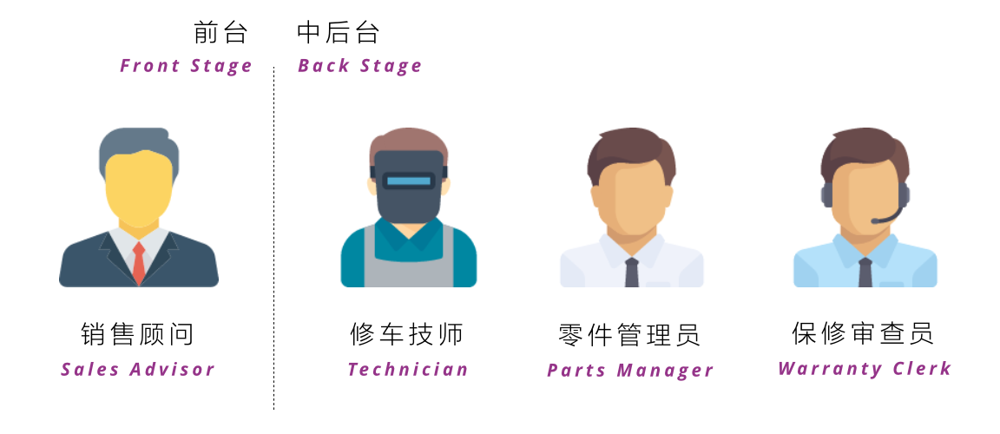
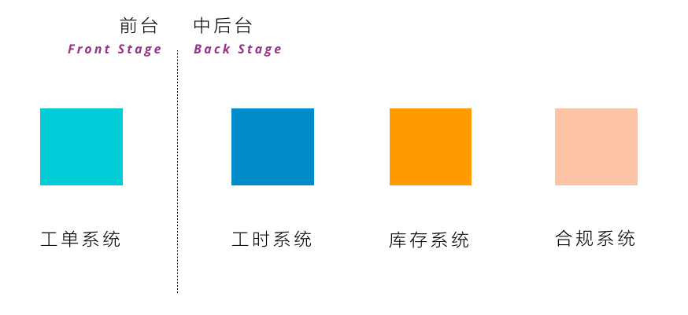
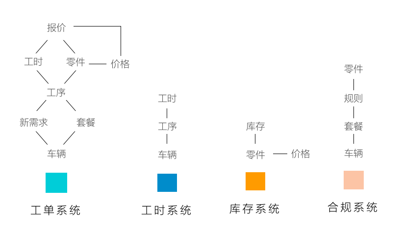
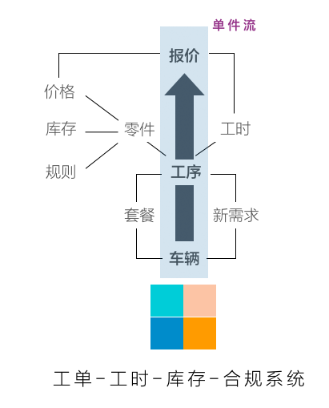
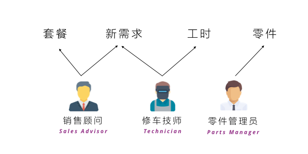
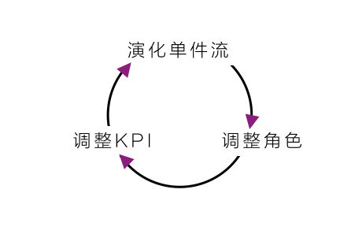

众人之事即为「政」，「治」理众人之事即为政治，治理所需的力量和资源即为「政权」。如何理解「众人之事」？如何「理而治之」？需要何等「政权」且如何分配，既是现代政治学的要义，也是所有复杂系统分析师的职责所在。
传统「以用户为中心」的设计通常从使用者的角度出发，然而却低估了复杂系统中「自变量（Independent Variable）」的非唯一性，即任何一个系统中并非一种决定系统最终效率或效果的因素，因每一个系统背后，可能都存在：
- 众人之事；
- 独特理而治之并保持平衡的手段。
我们用4S店中一个常见的场景理解一个看似简单的情况背后，众人之事是如何存在，且保持平衡的。
零件难题
你去保养你的爱车，你只会和你4S店销售经理打交道，假设你遇到了这样一个情况：
- 你的爱车正在保养；
- 销售经理告诉你他们的工程师发现了一处隐藏的故障，建议你更换一个零件；
- 你问销售经理多少钱；
- 销售经理给你说了一个数字；
- 你说可以，修吧；
- 销售经理说好的。
这样一个「零件难题」背后，加上为你服务的销售经理，一共有4种人存在，他们分别是：

- 销售顾问：负责和你确定需求、报价、解释价格；
- 修车师傅：负责发现零件潜在问题、领取零件、安装零件；
- 零件管理员：负责管理零件库存、审查零件申请、发送零件；
- 保修审查员：负责审查零件是否被包含在保修或保养菜单内。
通常在这样一个难题中通常出现四个系统辅助，它们分别是：

- 工单系统：由客户初步协议生成，工单中包含各种服务项以及相关零件，最终将转化为账单；
- 工时系统：用于记录技工工作的工时，与工单中的服务项强关联，方便经销商管理技工效率并按支付酬劳；
- 库存系统：用于管理零件的价格和出备货，避免零件丢失；
- 合规系统：用于查询车辆相关套餐是否对零件有效（套餐内客户不需付款），避免经销商损失。
众人之事
在讨论「众人之事」时，需要理解「其人」和「其事」，「其人」即系统角色中每个人的不同诉求；「其事」即系统中各个子系统所做的事情（包括人、也包括机器）。
一个人不可能学会做所有的事情，因此系统的设计者将大部分工序划分为多个角色，并在工序上赋予角色不同的诉求，它们是：
- 销售顾问希望能够在不伤害客户信任的前提下多销售服务项；
- 修车技师希望尽快完成车辆修理，多挣点钱；
- 保修审查员希望零件保修政策不要弄错，如果保了不该保的零件，是要罚钱的；
- 零件管理员希望零件不要丢，少罚点钱。
绝大多数情况下，每个人并不在乎其他角色的诉求，甚至有冲突。例如，修车技师的目的是在规定时间内完成车辆，增加的服务项反而对技师造成麻烦：技师需要额外时间确定是否修理、增加工序、确定零件是否合保、是否有货。这些时间将占用其真正工作时间（上钟）。
而对于销售顾问，增加的服务项可能是其增加销售额和获得消费者信任的好机会，在「可修可不修」的情况下，销售顾问甚至将这个服务作为「扣子」留在下一次服务中，而对于技师而言，这些决策的不确定都成为其等待的原因。但对于零件管理员与保修审核员，其工作只是保证过程不出错，他们并没有更快处理的诉求。
在这种多元化的诉求体系中产生了系统设计者不曾想到的用户行为，即「其事」：
- 销售顾问需要根据情况判断需不需要增加服务项目，修车技师无法自行决断，等待时有发生；
- 修车技师希望简化一切和修车无关的行为，乐于使用纸笔记录需求；他们也不按照维修步骤进行上下钟，因为多次的等待使其更倾向于选择同时修理多台车，多个步骤同时开始，却都没有结束，系统标准上下钟逻辑是线性而不支持并行工作；
- 保修审查员和零件管理员对快速完成工作没有任何需求，对于现有系统没有太多需求，排队情况在高峰期时有发生。
这个系统的人在不同诉求下一定天生互相不信任，而不信任将大大降低系统的流动效率。例如：
- 消费者天生不信任销售顾问不以他的实际需求出发；
- 保修审查员不信任修车技师会准确判断零件是否含在保险中；
- 零件管理员不信任修车技术不偷零件。
这种不信任最终体现在用户行为之间的强化，例如：
- 销售顾问以客户需求多变且不信任（问很多）的理由拒绝修车技师希望得到快速答复以减少等待的要求；
- 修车技师只好多线程工作，包括：多开几个钟，一个有等待，迅速切换到另一个工作台，并为了省事，不再上下钟；多开几个零件申请，客户同意后立刻进行更换；
- 保修审查员和零件管理员面对修车技师日益增长的零件需求，反而选择更谨慎的工作，因为过大需求增加其犯错的可能性。
但凡有人存在的系统中，这样的逻辑（即众人之事）十分吊诡：
- 系统设计者增加角色增加效率；
- 角色增加导致系统单点角色的诉求不同；
- 诉求不同导致行为不同，角色间不信任；
- 行为在不信任感中互相进行强化，进入稳定状态；
- 系统效率变慢，且极难打破僵局，即低效稳定。
理而治之
这样的问题在一个多工序、多角色、多诉求、多行为的复杂系统中普遍存在，这也基本是一个庞大官僚系统必然低效的根本原因。那么，我们对于这样的复杂系统，应该如何「理而治之」呢？
形成单件流
一个高效的复杂系统必然存在「单件流」，即最核心的价值输送路线。分散的系统则相反，上述四大系统间相互隔离，每个操作系统的角色无法形成一个达成共识的价值输送，则难以形成统一的系统认识：

例如，当新需求被添加时，维修技师需要等待销售顾问添加工序，才能开始工作，记录工时，最后才能获得收益；相反，销售顾问需要等待维修技师拿着车辆VIN号在合规系统中查询才能知道零件的具体价格。
而更好的系统集成规划形成独立的单件流：

这就是「车辆——工序——报价」的核心价值流动。这一核心价值流分作两个阶段：
- 车辆到工序阶段：销售顾问和维修技师负责在套餐基础上挖掘更多与车辆相关的新需求，最终产生具体工序；
- 工序到报价阶段：维修技师、保修审查员、零件管理员共同保障零件价格和工时附加在工序上，最终形成对客户的报价（报价=工时费+零件费）；
为核心概念设置角色
在全新的「单件流」中寻找核心概念，它们是：
- 套餐；
- 新需求；
- 工时；
- 零件。
前两项决定了工序的设立、后两项决定了将工序变成最终报价。这四个核心概念可设置三个核心角色：

通过分析我们发现，在一个充分整合的系统里，保修审查员是不需要的，当前情况下，因为工序不存在，新零件就和车辆建立不起联系。真实情况下，维修技师一手拿着零件序号、一手拿着车辆VIN（唯一标识码）找保修审查员进行核对。
至于为什么一但有新需求工序不能快速建立则由系统限制导致，如果在全新的系统里，一旦新需求发现，新工序就可快速建立，车辆马上就可以和零件关联，零件是否需要消费者额外付费则一目了然，保修审查员在这个系统中自然失去了意义。
建立新的KPI体系
重新思考角色后，还需重新设计KPI体系，以鼓励新的系统行为，例如在这个价值流上：
- 销售顾问和维修技师应该共尽可能缩短新需求发现到工序设置的时间；
- 修车技师还需保证工时能够准确地体现在报价上；
- 零件管理员需保证零件能够准确地体现在报价上。
循环演进
真实场景下，这三个过程都是变化的，系统整合不可能一次到位、则角色的变化融合不可能永远不变、KPI也需要不断演进，系统设计者应该在单件流、角色分配、KPI体系三者间反复循环演化。

这个循环，也揭示了我们对复杂系统进行分析的思路：
- 从核心概念的角度梳理出单件流；
- 根据单件流的节点与流向，重新调整角色；
- 根据角色的诉求和职责，重新调整KPI，反过来为演化单件流提供支持。
写在最后
关于复杂系统政治的思考来自于最近一次针对4S店售后服务的大规模服务设计项目。又一次回到了我最初的观点，服务设计绝对不是从消费者出发冰山一角的体验设计，而是超大复杂系统艰苦卓绝的分析与改造。
一个现有系统必然存在早已稳定的系统相关人，服务设计的领导者，需要理解系统的「政」——众人之事、巧妙地理而「治」之，是为系统的「政与治」。